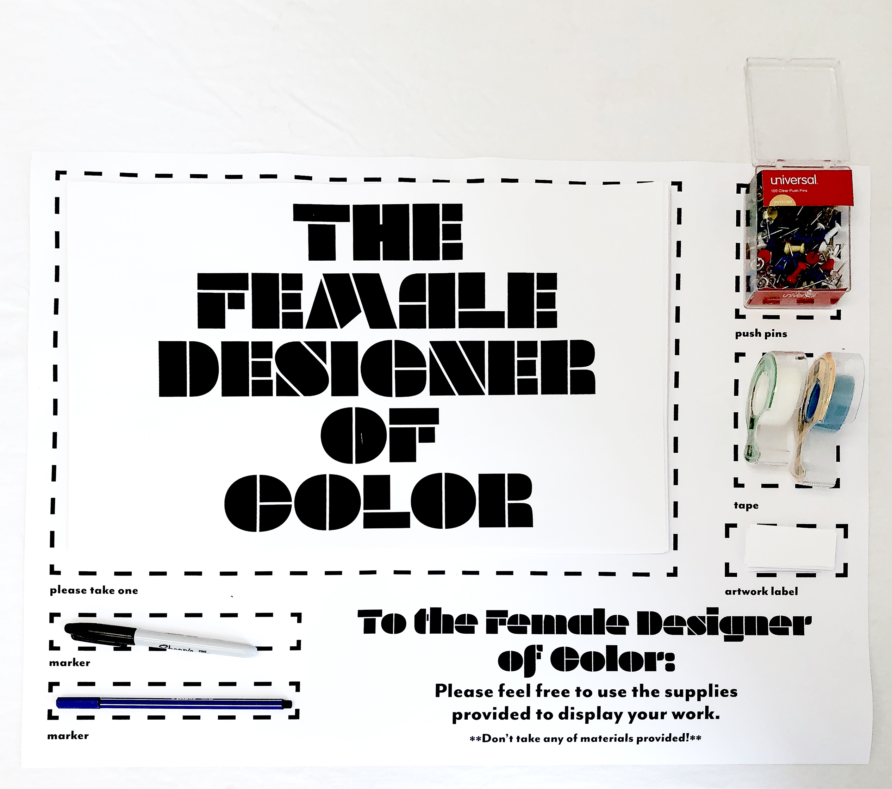
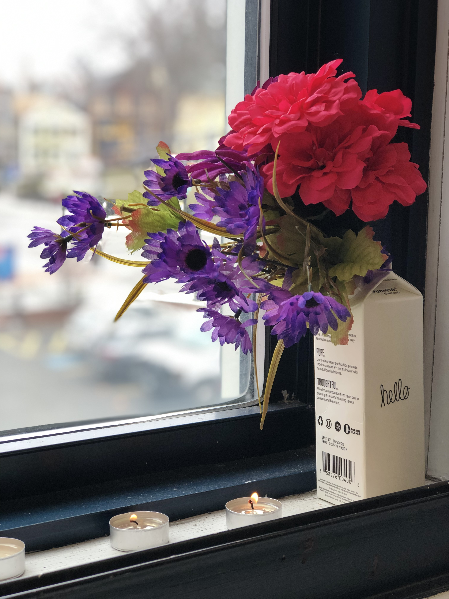

It’s no surprise that the women of color at RISD are underrepresented. When you look at the demographics of the school, the ~70% of POC are being taught by the 70% of white professors. The graphic design industry and academia are, unsurprisingly, patriarchal and it shows in RISD GD. So, Nina made a space designated for WOC in the graphic design department to display their work and express solidarity through “The Female Designer of Color” shrine and posters.
 